\newpage
Design and architecture
Domain model
The centerpiece of our domain model is the User class. It inherits from the ASP.NET's IdentityUser class allowing us to use ASP.NET Identity to manage our users. This offloads a lot of heavy lifting such as login, registration and authentication, instead letting us focus on developing other essential features for Chirp. All other classes in the domain model are dependent on the User class. Whether it would be a Cheep requiring an author, or a Like requiring a liker, they all must reference an instance of a User. This, in combination with ASP.NET Identity, makes it easy to verify that only authenticated users can make certain interactions with the site, such as following people and writing/liking cheeps. An illustration of our domain model can be seen below:
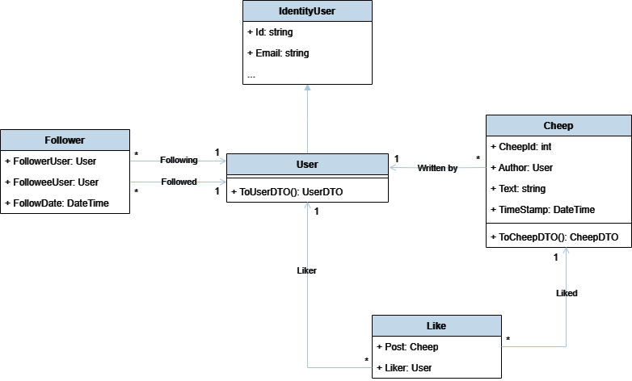
Architecture — In the small
The architecture of our Chirp application is based on the "Onion Architecture" pattern. This pattern is a layered architecture that enforces separation of concerns and invites a clear dependency flow.
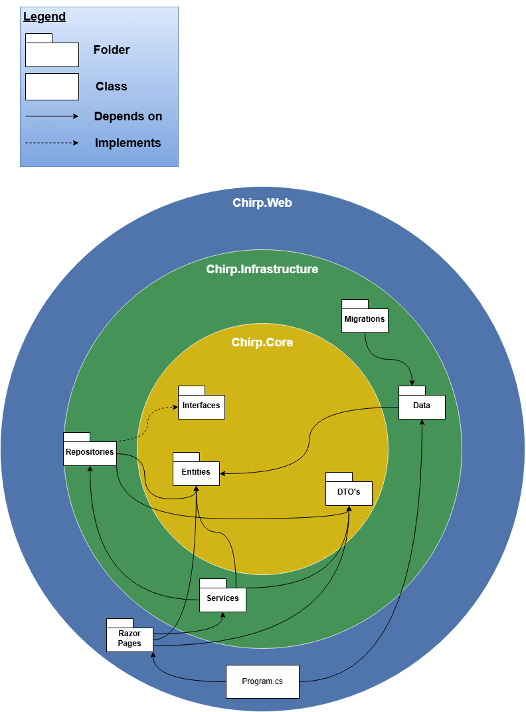
At the center of the application is the Core layer. This layer contains the domain model, interfaces, and DTOs. As seen in the diagram, the "Core" layer is dependent on nothing, but is depended on by many other layers. This is, as mentioned, a key principle of the Onion Architecture pattern.
The Infrastructure layer is responsible for data access, migrations, seeding, and our services. This layer is dependent on the Core layer, as it needs to interact with the domain model.
The outermost layer is the Web layer. This layer is responsible for delivering the application to the user. It uses ASP.NET Core to handle HTTP requests and is responsible for rendering the pages. Furthermore, it has the application's entry point, the Program class, which is responsible for configuring the application and starting the server.
Architecture of deployed application
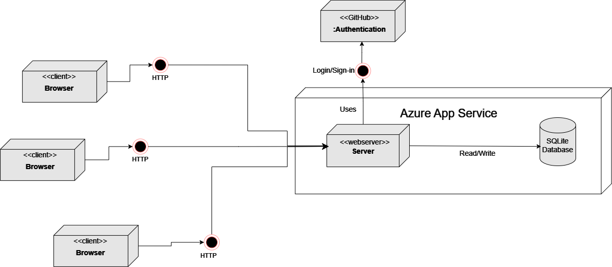
- Microsoft Azure Server:
- The application server is hosted on Azure App Service.
- It handles incoming requests, logic and interactions with the database.
- User Interaction:
- Users interact with the application through their browser
- The browser sends HTTP requests to the server hosted on Azure for secure communication.
- Database Communication:
- The server queries our SQLite database to retrieve and or store data
- Third-Party Authentication:
- Users login or sign in via Github Authentication, which is depicted in the er diagram
User activities
Legend
In the following section, multiple flowcharts will visualize the possible journeys through the application. Before showing how a user can interact with the chirp application, the diagrams are going to follow these different legends:
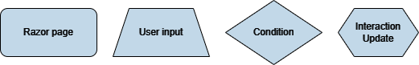
\newpage
Unauthorized
To show how a user can interact with the website while being logged out, we have made an 'Unauthorized' flowchart:
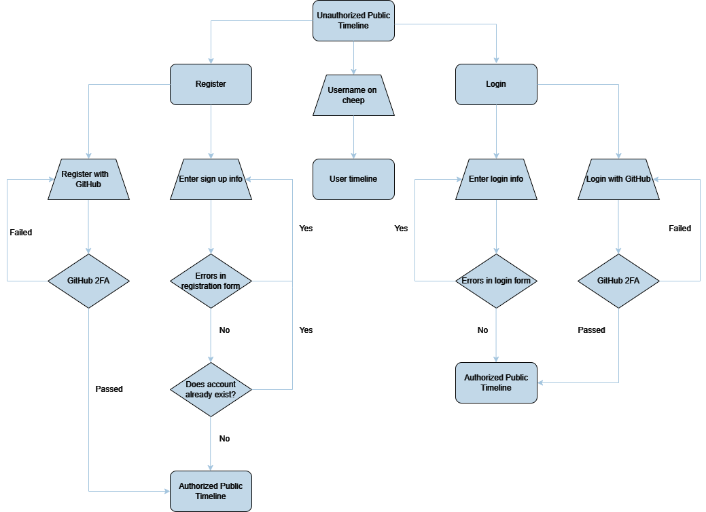
\newpage
Authorized
When a user has logged in or signed up, they now have authorized access. This grants the user more possibilities on the Chirp platform, visualized in the 'Authorized' flowchart:
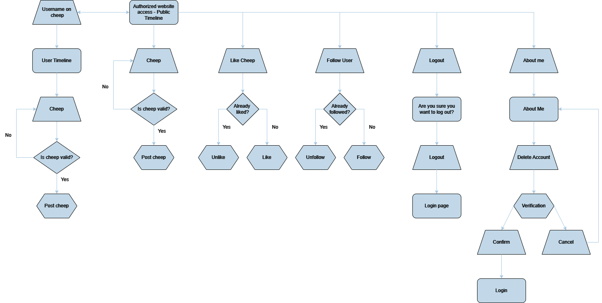
\newpage
Complete
To see the full picture of how it all works together in tandem, the whole application is laid out in the 'Complete' flowchart:
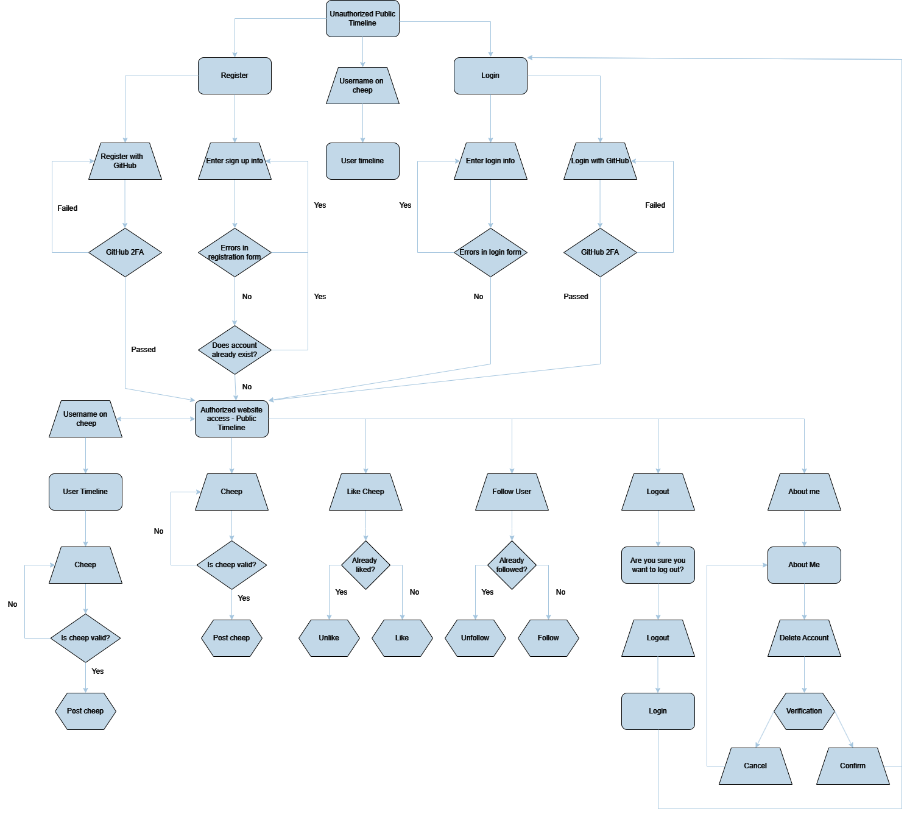
\newpage
Sequence of functionality/calls trough Chirp!
We have made a sequence diagram showing the flow of messages and data when an unauthorized user visits our homepage. The diagram can be seen below:
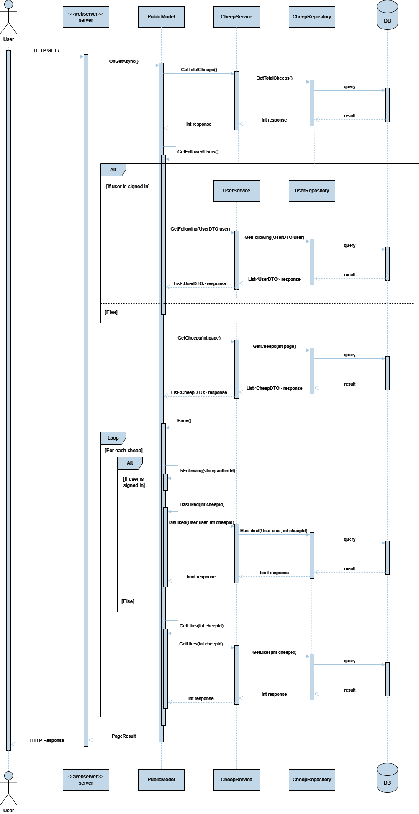
\newpage
Process
Build, test, release, and deployment
Pipeline
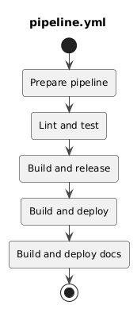
This is our pipeline workflow which job is to combine the other workflows. This defines different jobs in order to make sure workflow depend on each other in the correct way. This is needed since some workflows reads the output of others, as well as sometimes workflows should not even run if an other workflows fail.
Prepare pipeline
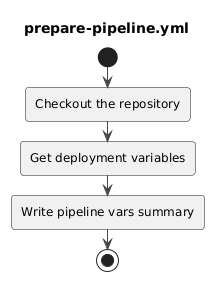
This is our prepare pipeline workflow which declares variables that other workflows uses. This is done in different ways like reading what branch the pipeline is running on or reading file contents in the repository. This workflow then outputs these variables as well as a summary. Other workflows can then use these variables to implement logic that defines the behavior of individual jobs and steps.
Linting and testing
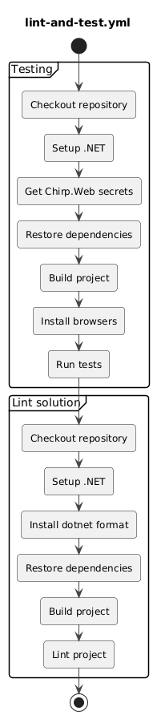
This workflow is responsible for testing and linting our project. Testing is done on both Windows and Linux runners, which ensures the project is compatible for both Windows and Linux. If the tests fail, the pipeline stops, and linting does not run. The linting part validates code formatting using dotnet format --verify-no-changes. This ensures formatting issues are resolved before commits through git hooks.
\newpage
Build and release
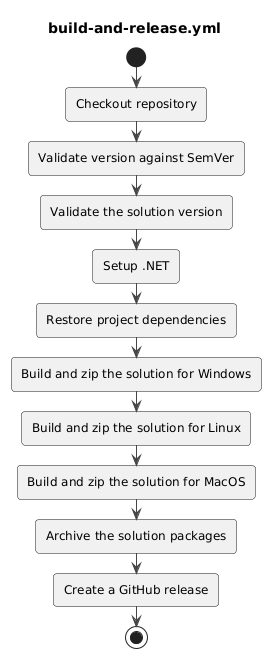
This workflow builds the application and generates either full releases or pre-releases. For the main branch, a full release is created while the staging branch generates a pre-release that includes the short SHA of the latest commit in its version. Both full releases and pre-releases are built for multiple platforms including Windows, Linux, and macOS. The releases follow the "SemVer" semantic versioning standard, which is validated through a regex in the pipeline. Using SemVer forced us to consider when to make major, minor, or patch releases. However, since we implemented SemVer quite late in the project, we didn't really work with it until the end.
\newpage
Deploy to Azure

This workflow handles the deployment of the application to Azure and is executed only from the main branch to publish the application to production. For branches like staging, deployment jobs are skipped because a staging slot in Azure costs money, and we didn't want half done code to be deployed to production.
\newpage
Team work
Project board
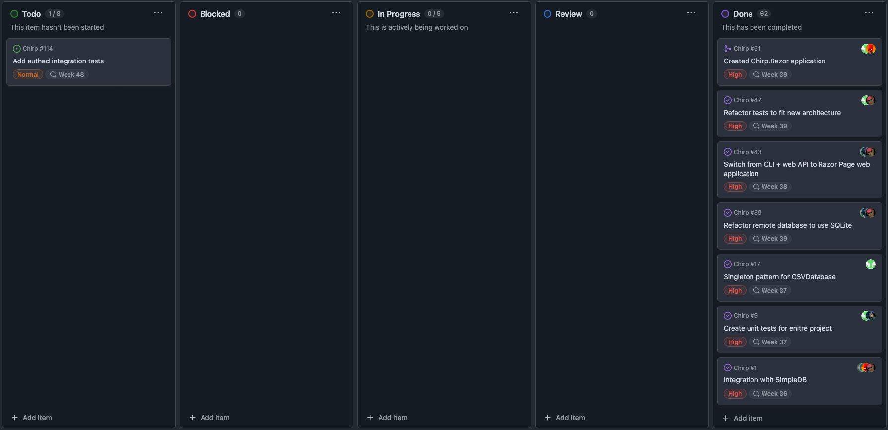
In the end of the project, almost all of our issues are resolved. The only issue missing is an the one where we will need to add authed integration tests. We did not resolve this issue because we ran into some problems while working on it. The problem was that we had no way to fake an identity that we could use for these tests. Since the priority was only normal, which meant that we had other issues that was more important, we decided to postpone that issue till we had time to figure out a solution. As of 18th of december 2024, 1 day before our hand-in we did not have time to figure out a solution for this issue. You can see that in total, we managed to resolve 62 issues out of 63 which we think is very good.
As of missing features, the only feature we talked about implementing that we did not managed to, was a profile picture feature. The reason we did not implement this, was because we had no time left to address and plan a solution of how to implement this feature, before we had to deliver this project.
From issue to production
When a contributor wants to create a new issue, the first thing they will do is go to the GitHub repository and find the Issues sections. The contributor will then find and click on the new issue button and will be prompted to select an issue template, where in our case there is only one. The template will help them fill out the issue in a generic way with an issue description and some acceptance criteria if necessary. When the issue is created, it will soon be labeled and assigned to a developer, as well as our Chirp project board. On the project board it will also be given a status, priority as well as an optional week, start date and end date. We also use milestones to keep track of when issues need to be done. As an example our milestones was the project reviews and the project presentation.
The issue is now ready for a contributor to pickup and start working on it. First step is to branch out from our staging branch to create a new feature branch. This branch needs to follow the naming conventions described in the README.md. When the development of the issue progresses, the contributor will update the acceptance criteria marking them complete, as well as clear out any complications that might occur under development. When all acceptance criteria are marked completed, the contributor will create a pull request from the feature branch back into the staging branch. On all branches, our pipeline (GitHub workflow) will run all our tests as well as lint our code on every commit. This workflow needs to complete successfully before a merge from the feature branch is available, as well as at least 2 people needs to review and accept the incoming changes in the pull request. When the pull request is merged into staging, our pipeline will be triggered for the staging branch that runs all the same steps as well as creating a pre-release for the version. The pipeline includes a version check against the official SemVer regex. If this fails, the pipeline will crash before creating the pre-release.
When necessary, we will make sure everything works as expected on the staging branch, creating new test for errors we find and at last create a pull request from staging into our main branch. When the pull-request is accepted, it will again trigger our pipeline which will automatically verify the version again and also make sure that no previous releases exists of that version. If everything is fine, our pipeline will create a release. We then update the release note to include all changes made referencing the issues we resolved in this version bump. The pipeline will also deploy our new version of the application to Azure.
\newpage
How to make Chirp! work locally
To run and clone the project you need the following prerequisites:
-
.NET 7 (for running the application)
-
Git CLI (for cloning the repository)
After the installation of the prerequisites, you can clone the repository by running the following command in your terminal:
Now that you have cloned our repository, you should navigate toChirp.Web by running the following command in your terminal:
Before running the application, you need to set up the GitHub oAuth secrets. This can be done by running the following commands in your terminal:
dotnet user-secrets set "GH_CLIENT_ID" <YOUR_GITHUB_CLIENT_ID>
dotnet user-secrets set "GH_CLIENT_SECRET" <YOUR_GITHUB_CLIENT_SECRET>
Replace YOUR_GITHUB_CLIENT_ID and YOUR_GITHUB_CLIENT_SECRET with your own GitHub oAuth application secrets. If you haven't already created a GitHub oAuth application it can be done here. It is important that the callback URL is http://localhost:5273/auth/github and the homepage URL is http://localhost:5273.
Finally, you can run the application by running the following command in your terminal. Please make sure you are in the Chirp.Web directory:
How to run test suite locally
If you haven't already, please refer to the "How to make Chirp! work locally" section to set up the prerequisites for installing .NET 7, Git CLI, and cloning the repository. Also, make sure you have set up the GitHub oAuth secrets as also described in the previous section.
- Install PowerShell if you haven't already.
- Instructions for installing PowerShell can be found here.
-
Navigate to the root of the project in your terminal.
-
Make sure Playwright is installed - if not, run the following command in the root of the project:
-
Run the tests
Ethics
License
We are using an Apache 2.0 license.
LLMs, ChatGPT, CoPilot, and others
In the development of Chirp! we have used two different large language models (LLMs) to help us with the development. The first one being GitHub Copilot and the second one being ChatGPT. While Copilot was being used constantly for small code completions, ChatGPT was more useful for finding ways to attack an issue or finding libraries to solve an issue.
The responses of ChatGPT were often wrong or incomplete, since it didn't have the full picture of the project. This meant that we had to remain critical of the responses, and not just blindly accept the answer. Since the responses were often wrong or misleading, we had to spend more time on the issue than if we had just solved it ourselves or remained critical. ChatGPT was more helpful when it came to more simple stuff such as Unit tests with given context. The use of Copilot was more successful, since it was used for small code completions, where the context was clear, which sped up the development process.
When it comes to co-authoring, we did not perceive these tools as significant contributors. There has been a few cases where their solution was used, and therefore we referenced them in the code.